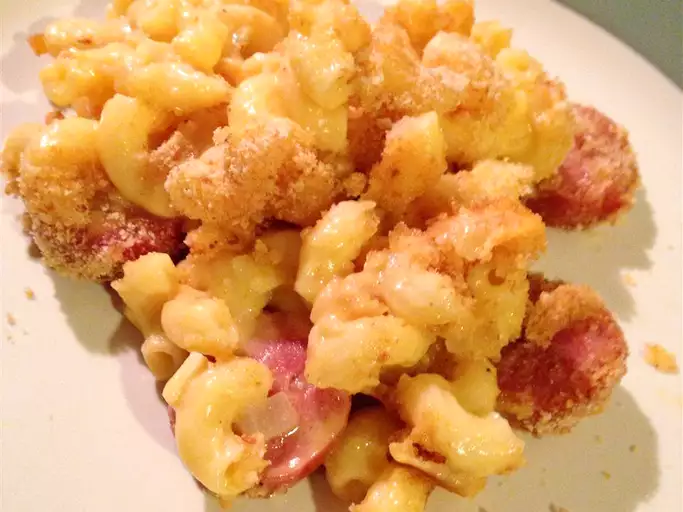

Macaroni & Cheese Casserole

Description
A wonderful dish that is easy to make and something your whole family will love! A cheesy delight that I enjoyed
many times throughout my childhood, making it one of my favorite guilty pleasures.
Ingredients
- 1 (16 ounce) package fully cooked kielbasa sausage, cut into 1/2-inch pieces
- 1 (8 ounce) package elbow macaroni
- ⅓ cup butter
- 1 small onion, chopped
- 3 tablespoons all-purpose flour
- 2 cups milk
- 1 (10 ounce) package sharp Cheddar cheese, cubed
- salt and ground black pepper to taste
- 1 cup dry bread crumbs, or more as needed
Steps
- Cook and stir the cut-up kielbasa in a large skillet over medium heat for 6 to 8 minutes,
until heated through and beginning to brown. Remove the sausage from the skillet, and set aside
- Fill a pan with lightly salted water, bring to a boil over medium-high heat, stir in the macaroni,
and return to a boil. Cook, stirring occasionally, until the pasta has cooked through but is still firm to the bite,
about 8 minutes. Drain well.
- Preheat an oven to 350 degrees F (175 degrees C). Grease a 9x13 inch baking dish.
- Melt the butter in the skillet over medium-low heat, and cook and stir the chopped onion for about 5 minutes,
until translucent. Whisk in the flour, stirring constantly to avoid lumps. Cook and stir the butter,
onion and flour for 2 to 3 minutes to make a roux, and remove from the heat. Whisk in the milk a little at a time,
stirring constantly, until all the milk has been incorporated, and return to low heat. Bring the sauce to a simmer,
and cook over low heat for about 2 minutes, stirring constantly, to finish cooking the flour.
Whisk in the Cheddar cheese, a few cubes at a time, until all the cheese has been incorporated and the sauce is hot and smooth.
- Pour the macaroni into the cheese sauce, and stir to combine. Stir in the cooked kielbasa, salt, and pepper.
- Spoon the macaroni mixture into the prepared baking dish, and sprinkle the bread crumbs over the top.
Bake for about 20 minutes in the preheated oven, until the crumbs are brown and the casserole is bubbling.
Let stand for 15 minutes after baking, to set before serving.